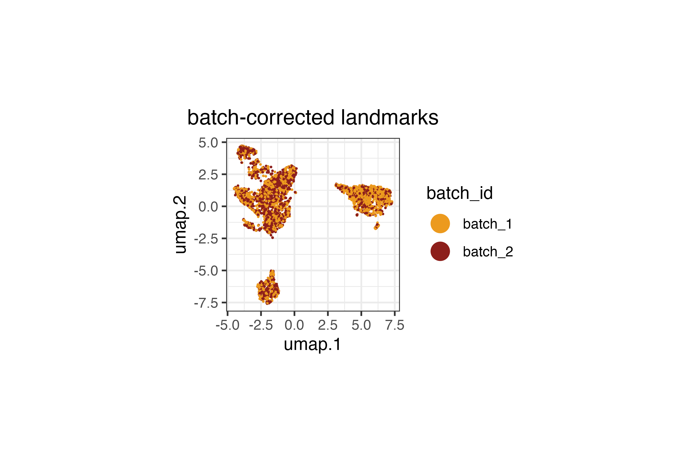
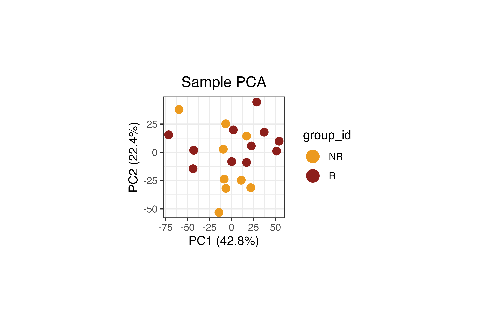
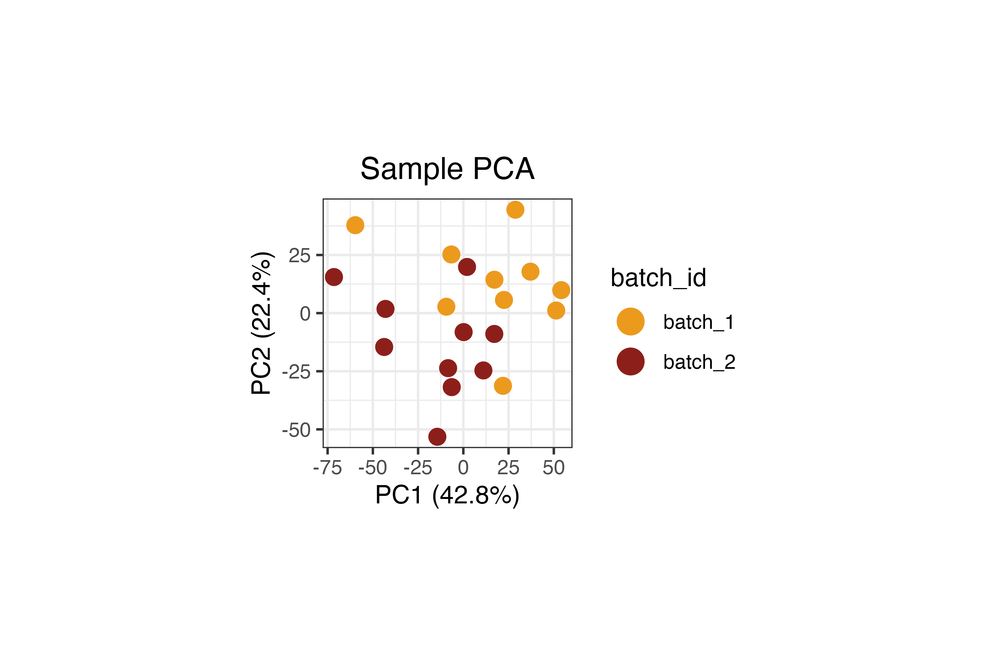
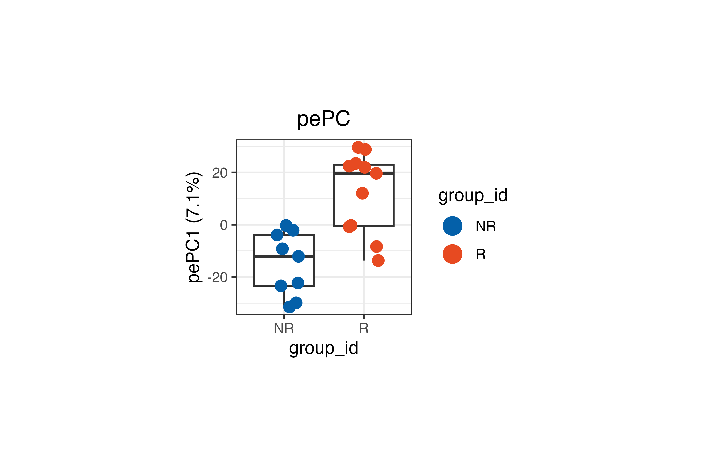
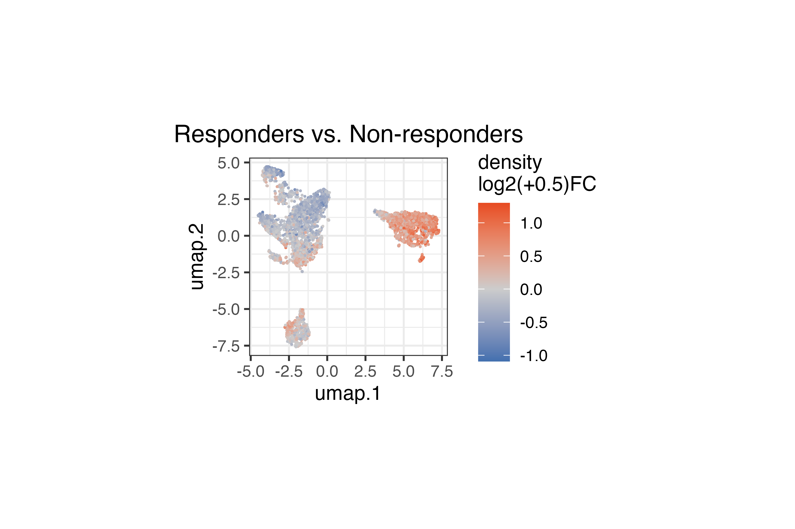
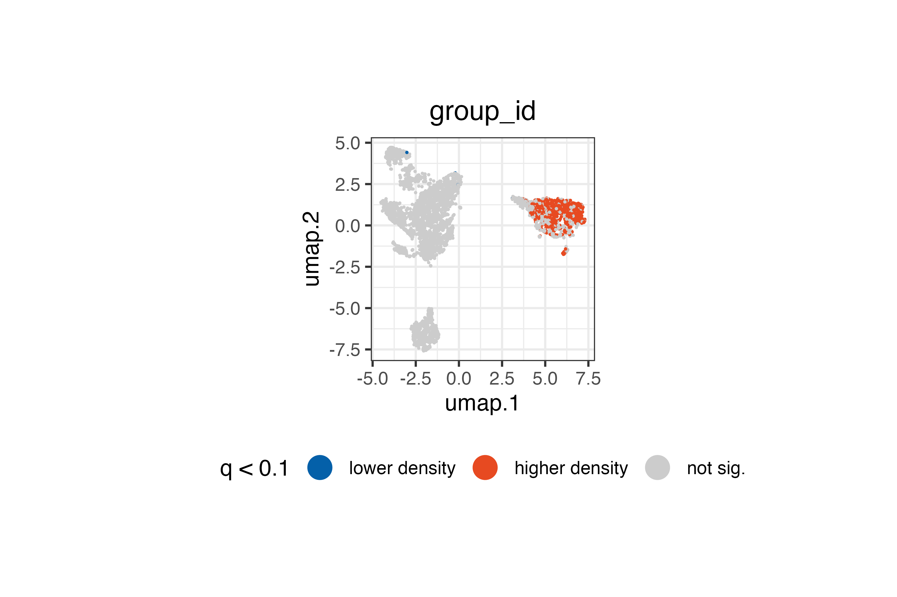
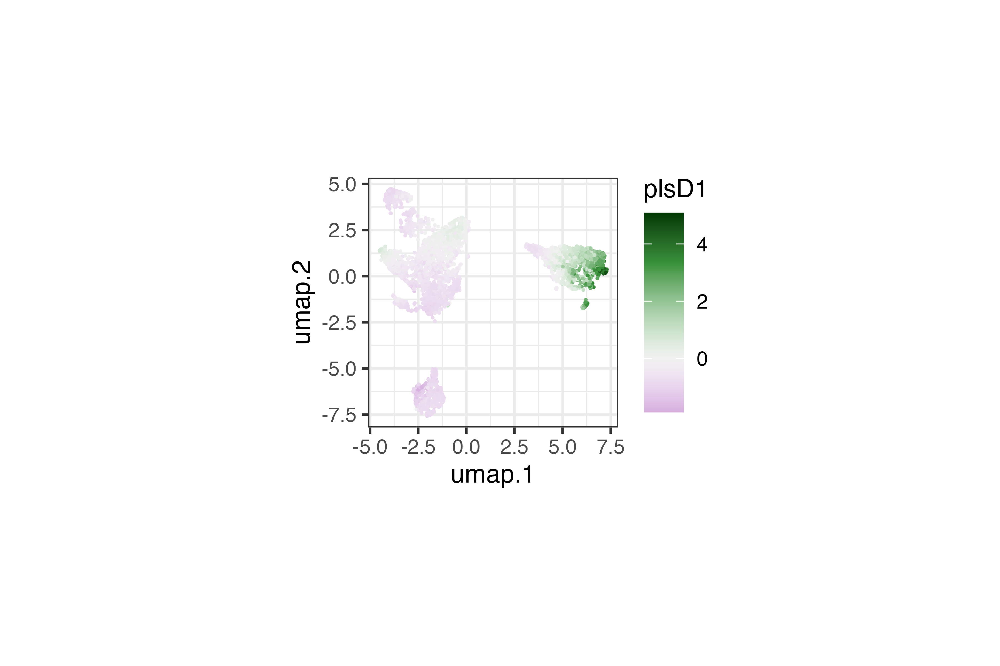
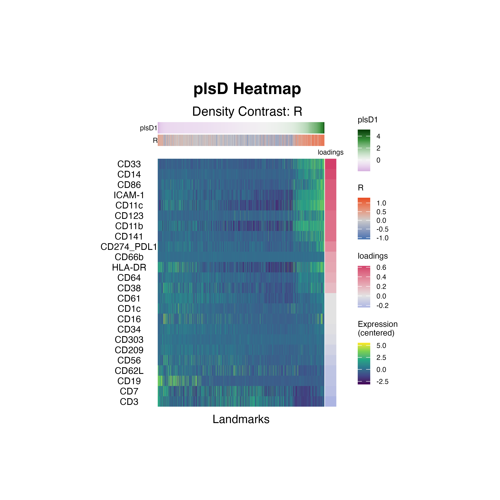

Cytometry: Anti-PD-1 Response
Pedro Milanez-Almeida
2026-05-12
Source:vignettes/clinical-cytometry-analysis.Rmd
clinical-cytometry-analysis.RmdIntroduction
This vignette demonstrates how tinydenseR can be applied
to publicly available clinical mass cytometry (CyTOF) data to identify
immune cell density changes associated with response to anti-PD-1
immunotherapy. While tinydenseR can also be used with
scRNA-seq data, it natively supports cytometry inputs via
flowCore::flowSet and flowWorkspace::cytoset
objects. This vignette illustrates the cytometry workflow
end-to-end.
We use data from Krieg et al. (2018), who profiled peripheral blood mononuclear cells from melanoma patients at baseline (before treatment) using high-dimensional mass cytometry. Patients were subsequently classified as responders (R) or non-responders (NR) based on clinical outcome after anti-PD-1 immunotherapy. A key finding of the original study was that the frequency of CD14+CD16−HLA-DRhi monocytes before commencing therapy was a strong predictor of progression-free and overall survival.
Analysis Overview
The core workflow follows four steps:
-
RunTDR()— build landmarks from aflowSetwith batch correction and compute sample-level density profiles. - Visualize landmark and sample embeddings — inspect the UMAP of landmarks and the sample PCA to confirm biological structure and batch correction.
-
get.lm()— perform differential density analysis controlling for batch effects. -
get.plsD()— decompose the density contrast into interpretable marker-driven components.
Data Source
The dataset is available from the Bioconductor
HDCytoData package as
Krieg_Anti_PD_1_flowSet(). The original study is described
in:
Krieg C, Nowicka M, Guglietta S, Schindler S, Hartmann FJ, Weber LM, Dber R, Robinson MD, Pelber SJ, Christopoulos P, et al. High-dimensional single-cell analysis predicts response to anti-PD-1 immunotherapy. Nature Medicine 24, 144–153 (2018).
Setup
Load Data
We load the Krieg et al. anti-PD-1 dataset directly from the
HDCytoData Bioconductor package. This returns a
flowSet containing one FCS file per sample, with expression
data and embedded sample-level metadata columns (group_id,
batch_id, sample_id).
Krieg_Anti_PD_1 <-
HDCytoData::Krieg_Anti_PD_1_flowSet()
# Extract marker channel information from the flowSet
MARKER_INFO <-
Krieg_Anti_PD_1@frames$`BASE_CK_2016-06-23_03_NR1.fcs`@description$MARKER_INFOPrepare Sample Metadata
The HDCytoData package encodes group_id
(response status), batch_id, and sample_id as
columns in the expression matrix rather than in the
flowSet’s pData. We extract these into a
sample-level metadata data frame below. In a typical cytometry workflow,
this metadata would already be available as a data frame or in
pData; the extraction here is specific to
HDCytoData’s encoding convention.
The response group (group_id) is derived from the FCS
filenames: R for responders and NR for
non-responders.
.meta <-
flowCore::fsApply(
x = Krieg_Anti_PD_1,
FUN = flowCore::exprs,
simplify = FALSE) |>
lapply(FUN = function(x) {
(x[,colnames(x = x) %in%
c("group_id",
"batch_id",
"sample_id")] |>
unique())[1,,drop = TRUE]
}) |>
dplyr::bind_rows(.id = "fcs_file") |>
as.data.frame() |>
dplyr::mutate(
group_id = gsub(pattern = "[[:digit:]]*\\.fcs",
replacement = "",
x = fcs_file,
fixed = FALSE) |>
strsplit(split = "_",
fixed = TRUE) |>
lapply(FUN = tail,
n = 1) |>
unlist() |>
factor(levels = c("NR", "R")),
batch_id = paste0("batch_",
batch_id),
sample_id = paste0("sample_",
sample_id),
) |>
(\(x)
`rownames<-`(x = x[,colnames(x = x) != "fcs_file"],
value = x$fcs_file)
)()The resulting metadata has one row per sample (FCS file), with columns for response status, batch, and sample identifier:
.metaPreprocess Markers
Before analysis, we prepare the flowSet by:
- Removing the metadata columns (
group_id,batch_id,sample_id) from the expression data — these are sample-level annotations, not markers. - Retaining only channels with an assigned marker class (i.e.,
excluding channels with
marker_class == "none"). - Renaming channels from instrument channel names to human-readable
marker names using the
MARKER_INFOlookup table.
# Remove metadata columns from expression data
Krieg_Anti_PD_1 <-
Krieg_Anti_PD_1[,!colnames(x = Krieg_Anti_PD_1) %in%
c("group_id",
"batch_id",
"sample_id")]
# Keep only channels with an assigned marker class
Krieg_Anti_PD_1 <-
Krieg_Anti_PD_1[,colnames(x = Krieg_Anti_PD_1) %in%
MARKER_INFO$channel_name[MARKER_INFO$marker_class != "none"]]
# Rename channels to marker names
colnames(x = Krieg_Anti_PD_1) <-
MARKER_INFO$marker_name[
match(x = colnames(x = Krieg_Anti_PD_1),
table = MARKER_INFO$channel_name)]Arcsinh Transformation
Mass cytometry data are typically transformed with the inverse hyperbolic sine (arcsinh) function using a cofactor of 5 to stabilize variance and compress the dynamic range. This is the standard transformation for CyTOF data.
asinhTrans <-
flowCore::arcsinhTransform(
transformationId = "arcsinh",
a = 0,
b = 1/5,
c = 0)
Krieg_Anti_PD_1 <-
flowCore::transform(`_data` = Krieg_Anti_PD_1,
translist = flowCore::transformList(from = colnames(x = Krieg_Anti_PD_1),
tfun = asinhTrans))Step 1: Build Landmarks with RunTDR()
RunTDR() is the main entry point. It creates landmark
cells, builds a neighborhood graph, computes sample-level density
profiles, and produces embeddings — all in a single call. For cytometry
data, we set .assay.type = "cyto" and provide the
flowSet directly.
The .harmony.var = "batch_id" argument instructs
tinydenseR to apply Harmony batch correction during
landmark computation, mitigating technical variation between processing
batches. The .sample.var = "name" uses the FCS filenames
(the default sample identifier in flowSet
pData) to define biological samples.
lm.cells <-
tinydenseR::RunTDR(
x = Krieg_Anti_PD_1,
.sample.var = "name",
.harmony.var = "batch_id",
.assay.type = "cyto",
.seed = 123, # for reproducibility
.verbose = FALSE
)Step 2: Visualize Landmark and Sample Embeddings
Before statistical testing, we inspect the landmark UMAP and sample PCA to confirm that (1) batch correction was effective and (2) the data exhibits the expected biological structure.
Landmark UMAP
We color landmarks by their batch identity to verify that Harmony batch correction has integrated cells from different batches. Landmarks from both batches should be intermixed rather than forming separate clusters.
tinydenseR::plotUMAP(
x = lm.cells,
.feature = lm.cells$metadata$batch_id[lm.cells$config$key],
.plot.title = "batch-corrected landmarks",
.color.label = "batch_id",
.cat.feature.color = tinydenseR::Color.Palette[1,c(3,4)],
.point.size = 0.1,
.panel.size = 1.5) +
ggplot2::theme(
plot.subtitle = ggplot2::element_blank())
Sample PCA
The sample PCA provides a low-dimensional view of inter-sample variation based on their density profiles across landmarks.
tinydenseR::plotSampleEmbedding(
x = lm.cells,
.embedding = "pca",
.color.by = "group_id",
.cat.feature.color = tinydenseR::Color.Palette[1,c(3,4)],
.panel.size = 1.5,
.point.size = 3
) +
ggplot2::labs(title = "Sample PCA") +
ggplot2::theme(
plot.title = ggplot2::element_text(hjust = 0.5))
When we inspect both the biological variable of interest
(group_id, above) and the technical variable
(batch_id, below), we can clearly see that
batch_id remains a dominant source of variation in this
dataset. This is expected since the original study reported strong batch
effects influencing the composition of the immune landscape.
Importantly, the Harmony-correction used above mitigates
expression-level batch effects, while the subsequent linear modeling
will control for batch effects to isolate the cell state density signal
attributable to response status.
tinydenseR::plotSampleEmbedding(
x = lm.cells,
.embedding = "pca",
.color.by = "batch_id",
.cat.feature.color = tinydenseR::Color.Palette[1,c(3,4)],
.panel.size = 1.5,
.point.size = 3
) +
ggplot2::labs(title = "Sample PCA") +
ggplot2::theme(
plot.title = ggplot2::element_text(hjust = 0.5))
Step 3: Differential Density Analysis with
get.lm()
Design Matrix
We set up a design matrix with ~ group_id + batch_id,
which models the density at each landmark as a function of response
status while controlling for batch effects. This is a standard approach:
despite Harmony correction at the expression level, compositional
differences across batches at the sample level could still confound the
analysis.
The column names are cleaned to remove the variable name prefixes for readability.
.design <-
model.matrix(object = ~ group_id + batch_id,
data = lm.cells$metadata) |>
(\(x)
`colnames<-`(x = x,
value = colnames(x = x) |>
gsub(pattern = "^group_id|batch_id",
replacement = "",
fixed = FALSE))
)()Fit the Model
get.lm() fits a limma model to the log-transformed fuzzy
density profiles across landmarks. The coefficient "R"
captures the density log2-fold-change in responders relative to
non-responders (the reference level) at each landmark.
lm.cells <-
tinydenseR::get.lm(
x = lm.cells,
.design = .design,
.verbose = TRUE
)Reduced Model for Sample Embedding
To embed samples along the group_id axis specifically,
we fit a reduced model that contains only the batch variable. By
comparing the full and reduced models, tinydenseR can
separate the density variation due to response status from that due to
batch — producing a sample embedding that reflects only the biologically
meaningful axis.
nogroup_id.design <-
model.matrix(object = ~ batch_id,
data = lm.cells$metadata)
lm.cells <-
tinydenseR::get.lm(
x = lm.cells,
.design = nogroup_id.design,
.model.name = "nogroup_id",
.verbose = TRUE
)Compute Sample Embedding
get.embedding() computes a supervised sample embedding
(partial-effect PC, pePC) by comparing the full and reduced models. The
resulting pePC captures sample variation attributable to
group_id after removing the effect of
batch_id.
lm.cells <-
tinydenseR::get.embedding(
x = lm.cells,
.full.model = "default",
.red.model = "nogroup_id",
.term.of.interest = "group_id",
.verbose = TRUE
)Visualize Sample Embedding
The pePC provides a quantitative summary of how each sample deviates along the response axis, with the fraction of total density variance it explains reported on the axis labels.
tinydenseR::plotSampleEmbedding(
x = lm.cells,
.embedding = "pePC",
.sup.embed.slot = "group_id",
.color.by = "group_id",
.cat.feature.color = tinydenseR::Color.Palette[1,c(2,1)],
.panel.size = 1.5,
.point.size = 3) +
ggplot2::labs(title = "pePC") +
ggplot2::theme(
plot.title = ggplot2::element_text(hjust = 0.5),
legend.position = "right")
Visualize Differential Density
We overlay the "R" coefficient (density
log2-fold-change) onto the landmark UMAP. This reveals which regions of
the immune cell landscape show increased or decreased density in
responders relative to non-responders.
tinydenseR::plotUMAP(
x = lm.cells,
.feature = lm.cells$results$lm$default$fit$coefficients[,"R"],
.plot.title = "Responders vs. Non-responders",
.color.label = "density\nlog2(+0.5)FC",
.panel.size = 1.5,
.point.size = 0.1,
.midpoint = 0) +
ggplot2::theme(
plot.subtitle = ggplot2::element_blank())
We can also restrict the visualization to statistically significant landmarks (q < 0.1), categorizing them by the direction of the density change:
tinydenseR::plotUMAP(
x = lm.cells,
.feature =
ifelse(
test = lm.cells$results$lm$default$fit$coefficients[,"R"] < 0,
yes = "lower density",
no = "higher density") |>
ifelse(
test = lm.cells$results$lm$default$fit$pca.weighted.q[,"R"] < 0.1,
no = "not sig.") |>
factor(levels = c("lower density",
"higher density",
"not sig.")),
.plot.title = "group_id",
.color.label = "q < 0.1",
.cat.feature.color = tinydenseR::Color.Palette[1,c(2,1,6)],
.point.size = 0.1,
.panel.size = 1.5,
.legend.position = "bottom") +
ggplot2::theme(plot.subtitle = ggplot2::element_blank())
Landmarks with significantly higher or lower density in responders span specific regions of the immune landscape. The spatial pattern on the UMAP indicates which immune cell populations are differentially represented between responders and non-responders at baseline.
Step 4: Decomposing the Density Contrast with
get.plsD()
Differential density analysis tells us where on the landmark
landscape changes occur between responders and non-responders, but not
what marker features drive those changes.
get.plsD() bridges this gap by decomposing the density
contrast into PLS components whose loadings reveal the markers
underlying the signal. In the context of cytometry data, these loadings
correspond to protein markers rather than gene expression features. We
set .residualize = TRUE to remove residual batch-associated
variation from the decomposition, ensuring that plsD components reflect
response-related signal rather than technical artifacts.
lm.cells <-
tinydenseR::get.plsD(
x = lm.cells,
.coef.col = "R",
.model.name = "default",
.verbose = TRUE,
.residualize = TRUE
)plsD1: Landmark Scores on UMAP
We can color the landmark UMAP by plsD1 scores to visualize which regions of the immune cell manifold contribute most strongly to the first component. The plsD1 component captures the dominant axis of marker expression variation that covaries with the density contrast between responders and non-responders.
Landmarks with high plsD1 scores are those where the marker program defined by the plsD1 loadings is most strongly expressed and contributes to the density differences between groups.
tinydenseR::plotPlsD(
x = lm.cells,
.coef.col = "R",
.plsD.dim = 1,
.embed = "umap",
.panel.size = 1.5,
.point.size = 0.1
)[[1]] +
ggplot2::theme(
plot.title = ggplot2::element_blank(),
legend.position = "right")
plsD1: Marker Loadings
The plsD1 heatmap displays the marker loadings for the first density-contrast-aligned component. Each row is a marker, and the columns correspond to landmark groups ordered by their plsD1 scores. The loadings reveal which markers drive the density differences captured by plsD1 — identifying the protein-level signatures that distinguish responders from non-responders.
tinydenseR::plotPlsDHeatmap(
x = lm.cells,
.coef.col = "R",
.plsD.dim = 1,
.order.by = "plsD.dim",
.panel.height = 3,
.panel.width = 2,
.feature.font.size = I(x = 8)
)
Interpretation
The plsD1 decomposition identifies the dominant axis of marker expression variation that covaries with the density contrast between responders and non-responders. The heatmap rows are ranked by their plsD1 loadings (that is, their contribution to the component).
The top positive loadings form a coherent myeloid/antigen-presenting program: CD33 (0.61), CD14 (0.60), CD86 (0.53), ICAM-1 (0.52), CD11c (0.50), CD141 (0.48), CD123 (0.45), and CD11b (0.45). Notably, HLA-DR is positive (0.22) while CD16 has a near-zero loading (0.02) — consistent with the original finding by Krieg et al. that CD14+CD16−HLA-DRhi monocytes are enriched at baseline in patients who respond to anti-PD-1 immunotherapy.
At the negative end of plsD1, lymphocyte markers predominate: CD3 (−0.25), CD7 (−0.19), CD62L (−0.17), CD19 (−0.16), and CD56 (−0.13). This indicates that landmarks enriched in T, B, and NK cell markers tend toward higher density in non-responders relative to responders along this component.
Together, plsD1 separates a myeloid/monocyte-enriched landmark program (positive loadings, higher density in responders) from a lymphocyte-enriched program (negative loadings, higher density in non-responders), providing a data-driven decomposition that aligns with the reported predictive role of CD14+CD16−HLA-DRhi monocytes in anti-PD-1 response.
Summary
This analysis demonstrates the full tinydenseR workflow
on publicly available clinical mass cytometry data:
| Step | Function | Purpose |
|---|---|---|
| 1 | RunTDR() |
Build landmarks from a flowSet, apply batch correction,
compute density profiles |
| 2 |
plotUMAP(), plotSampleEmbedding()
|
Validate batch correction and biological structure |
| 3 |
get.lm() with full and reduced models |
Differential density testing, controlling for batch |
| 4 | get.plsD() |
Decompose density contrast into marker-driven components |
This vignette illustrates several features of tinydenseR
relevant to cytometry workflows:
-
Native
flowSetsupport:RunTDR()acceptsflowCore::flowSetobjects directly via.assay.type = "cyto", with no conversion required. -
Batch correction: Harmony integration is applied
during landmark construction via
.harmony.var, with batch effects additionally controlled for in the linear model via the design matrix. -
Nested model embedding: The full-model /
reduced-model approach to
get.embedding()isolates sample variation attributable to a specific variable of interest while removing confounders. -
plsD for cytometry markers:
get.plsD()decomposes density contrasts into marker-driven programs. For cytometry data, the loadings correspond to protein markers rather than transcriptomic features, providing directly interpretable immune phenotyping information.
The dataset analyzed here — baseline CyTOF profiling of melanoma patients before anti-PD-1 immunotherapy (Krieg et al., 2018) — is well-suited for this type of analysis because it combines a clearly defined clinical variable (response status) with high-dimensional immune phenotyping data and a known biological signal (CD14+CD16−HLA-DRhi monocytes).